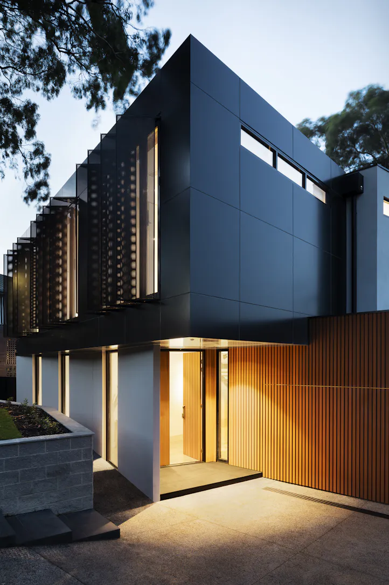
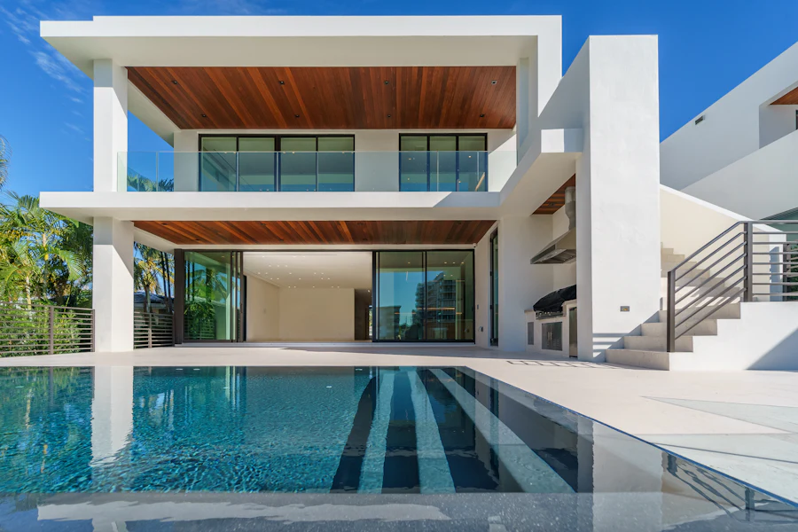
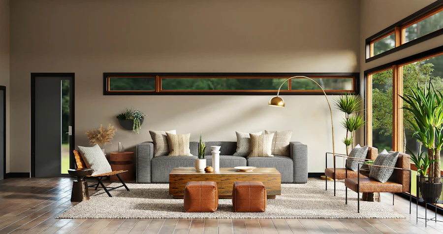

Disciplines of Architectural Distinction
Holistic Authorship From Masterplan to Door Hardware
We provide unbroken creative continuity across all phases of the built environment. Our interdisciplinary studio integrates masterplanning, structural physics, custom furniture fabrication, and turnkey execution into one seamless engagement.

Bespoke Residential Villas & Estates
We craft private residential sanctuaries tailored specifically to our patrons' habits, rituals, and sensory sensibilities. Every villa is conceived as a habitable sculpture that responds dynamically to changing daylight, prevailing wind patterns, and native flora.
Commercial & Corporate Landmarks
Transforming corporate headquarters, flagship boutiques, and cultural foundations into physical manifestations of institutional gravitas. Our commercial structures foster cognitive focus, creative collaboration, and landmark civic presence.

Interior Curation & Exterior Terraces
We view interiors not as decorative afterthought, but as the internal skin of the building. Our team designs custom built-in cabinetry, collaborates with master stone carvers in Pietrasanta, and engineers exterior living pavilions that melt into natural infinity pools.
Heritage Restoration & Adaptive Reuse
Breathing contemporary life into historic estates, brownstones, and industrial monuments. We preserve vintage stone vaults and hand-hewn timbers while surgically inserting cutting-edge geothermal systems, concealed automation, and open double-height galleries.
The Architecture of Conception
Our protocol is defined by iterative refinement—progressing from raw site listening to digital millimeter twins, followed by bespoke hand craftsmanship.
“We do not design buildings to impress the camera; we construct geometries that elevate the human nervous system.”
Site Forensic & Topological Resonance
Comprehensive lidar scanning, subterranean hydrology mapping, and seasonal light angle solar audits to understand the site's primordial narrative.
Spatial Geometry & Monolithic Massing
Sculpting volumetric voids and solid masses. We balance sightlines with sacred privacy corridors, crafting intuitive domestic choreographies.
Material Rigor & Digital Twin BIM
Quarry visits in Carrara and Swiss Graubünden to hand-select blocks of stone. Detailed Level 400 BIM modeling for micron-tight structural tolerances.
Artisanal Fabrication & Execution
Daily site presence under partner supervision. Custom millwork, flush architectural glazing, and bespoke landscape integration to final turnkey delivery.
Frequently Addressed Questions
Answers to common client inquiries regarding commissions, fees, and global practice.
We operate on a transparent percentage of construction cost model (typically 12% to 18% depending on scale and complexity), divided across our 5 project phases. Initial site feasibility studies are billed at a fixed lump sum, which is credited toward the full commission upon engagement.
Yes. While our primary design studios are rooted in Zurich and Tokyo, we regularly accept select private residential and cultural commissions across North America, the Mediterranean, and the United Kingdom under bespoke remote project oversight protocols.
A comprehensive custom estate typically spans 18 to 28 months from initial geological listening and parametric massing through permits, structural fabrication, artisanal millwork, and final turnkey spatial commissioning.
We combine passive bioclimatic orientation, geothermal loop heating, ultra-low embodied carbon materials (including timber-concrete composites and locally quarried stone), and on-site solar micro-generation to meet stringent Minergie-P and LEED Platinum standards.
Yes. While our primary focus is holistic ground-up spatial architecture, we accept a limited number of high-touch interior architectural transformations and custom joinery commissions each year on an invitational basis.